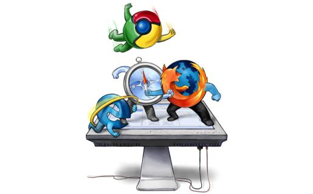

La web. Una plataforma abierta por naturaleza.
Contenido
- Historia y evolución de la web.
- El proyecto WebAPI y FirefoxOS
- Creando la web:
- Mozilla webmaker
- Herramientas de desarrollo en Firefox.
- ¿Como aprender más?
Historia y evolución de la web
Historia y evolución de la web
- Nace como una forma de compartir documentos cientificos.
- Las empresas y las personas pueden tener su propio sitio web.
- Nace el boom de los blogs y más tarde las redes sociales. Los usuarios
son los protagonistas.
- Se crean aplicaciones completas que funcionan con las mismas
tecnologías.
En informática, la World Wide Web (WWW) o Red informática mundial es un sistema de distribución de información basado en hipertexto o hipermedios enlazados y accesibles a través de Internet. Con un navegador web, un usuario visualiza sitios web compuestos de páginas web que pueden contener texto, imágenes, vídeos u otros contenidos multimedia, y navega a través de esas páginas usando hiperenlaces.
La guerra de los browsers

El proyecto webAPI y Firefox OS
El proyecto webAPI
- Proveer un estandar para acceder a los recursos de los
dispositivos. Permitir que la web abierta pueda acceder a recursos
que antes solo podian acceder las APIs privativas de los dispositivos.
- Vibración
- Camara
- Lista de contactos
- Calendario
- Notificaciones
- ...
Objetivos de Firefox OS (Sistema operativo para móviles basado en Gecko)
- Llevar la web a un nuevo nivel.
- Crear un ecosistema abierto para el desarrollo de aplicaciones.
- Proveer un stack completo para el desarrollo de aplicaciones alcanzando (o superando)
el ofrecido actualmente (Android, iOS, Windows Phone, ...) .
Creando (y aprendiendo de) la web
Mozilla Webmaker
- Objetivo: Convertir a los usuarios de usadores a creadores/i>
- Herramientas
- Projectos
- Comunidad
Herramientas de desarrollo
- Editores de texto/IDEs:
- Aptana Studio
- Komodo IDE
- Vim
- Cualquier cosa capaz de escribir texto "plano"
- Debuggers: Herramientas integradas en el browser
- Emular FirefoxOS
¿Como continuó?
- Mozilla Webmaker (http://webmaker.mozilla.org)
- Web platform (http://www.webplatform.org/)
- Mozilla Developer Network (http://developer.mozilla.org)
←
→
/
#